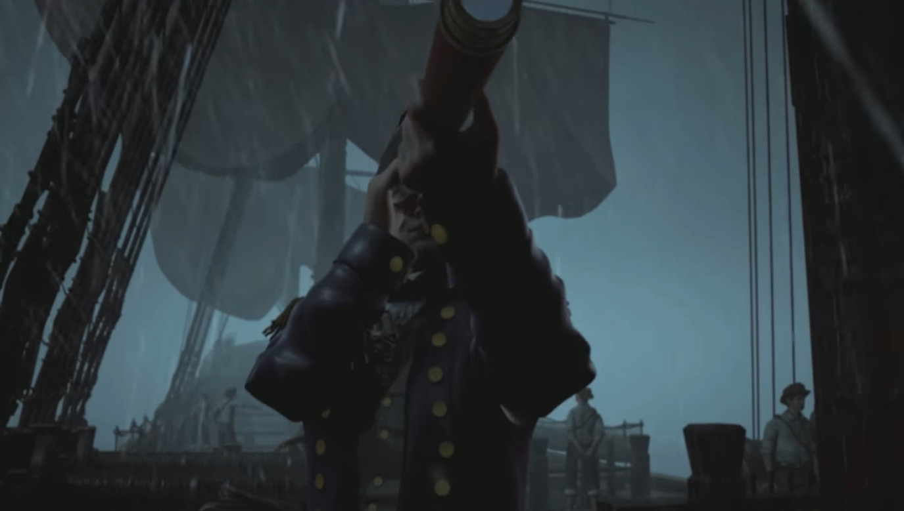

Keadaan Yang Mulai Memburuk

"Brak" aku langsung melompat kaget, ternyata Sang Kapten baru saja keluar dari kabinnya dan berlari ke depan dek atas.
Setelah itu dia langsung mengeluarkan teropongnya dan melihat keadaan sekitar. Aku tidak tahu apa yang dipikirkan kapten, tapi aku curiga akan apa yang terjadi.